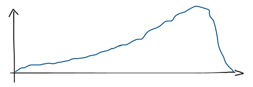

Audio
Latence
Dans la tête d’une personne hypersensible, les bruits et les stimuli passant presque inaperçu chez la majorité de la population vont être entendus. L’accumulation des sons va amener un sentiment d’angoisse que cette personne vie chaque jour. De l’inconfort va aussi être perçu par l’impression d’être dans sa tête.
Rôle: Monteur sonore, Scénariste, Preneur de son
Logiciel: Reaper
Le processus de création
L'intention
Dans la tête d’une personne hypersensible, les bruits et les stimuli passant presque inaperçu chez la majorité de la population vont être entendus. L’accumulation des sons va amener un sentiment d’angoisse que cette personne vie chaque jour. De l’inconfort va aussi être perçu par l’impression d’être dans sa tête.
Illustration du concept
Le tout commence tranquillement pour s’intensifier de plus en plus et former un pic à la fin. Sa crise finie assez rapidement et d’un coup.